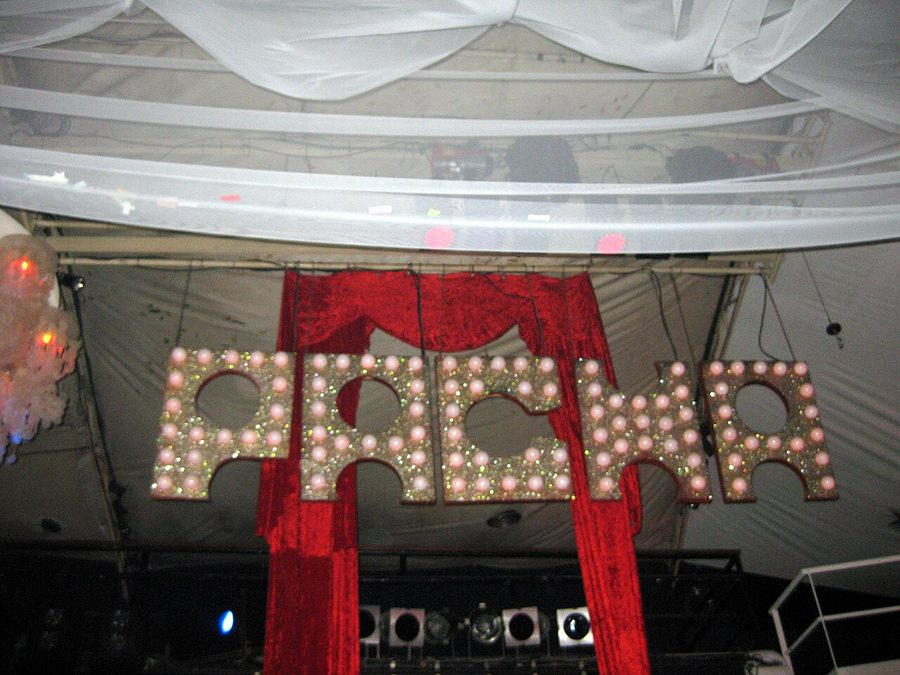

Pacha welcomes 2009 with Erick Morillo



In recent weeks we’ve been literally inundated with festival announcements and news of the massive events that’ll be launching over ther summer season. There’s some of us, though, who prefer the cosy confines of a club, and to enjoy the sort of extended sets that a DJ only gets to play within the intimate ‘four walls’ of an indoor venue. It’s those very people who’ll be stoked with the news that global clubbing brand Pacha will return to Home Nightclub in Sydney this New Years Eve, and it’ll be packing one huge headliner to top the festivities – none other than house legend and Subliminal Records chief Erick Morillo!
To call Erick Morillo a ‘veteran’ would be to gloss over the fact that he still effortlessly holds his own with the top DJ/producers working in house music around the world. Last year he celebrated the tenth successful year of his powerhouse Subliminal label, and he’ll be returning to Australia after several high-profile tours in recent years, one of which included headlining the first ever Future Music Festival in Sydney. For those who love their house music, they’ll be in for a treat as his extended sets are the stuff of legends. The last time Erick played Home Nightclub, he hit the decks at midnight and was still smashing out the tunes at 11am the next morning! Who knows how long he’ll be playing for in the opening hours of 2009?
As we’ve witnessed in previous years, you can be sure that Pacha will bring a touch of that renown Ibizan decadence to Sydney. The team from Home have promised spectacular production, the infamous Pacha dancers as well as plenty of other VIP touches to ensure this year’s NYE party will live up to the decadent standard set by previous Pacha extravaganzas.
TAKE A LOOK AT INTHEMIX’S GALLERY FROM PACHA NYE 2008 TO RELIVE THE PARTY!
Pacha returns to Home Nightclub on Wednesday 31st December with Erick Morillo at the controls! Tickets are on sale on ITM, Thursday 25th September, stay tuned for more details.